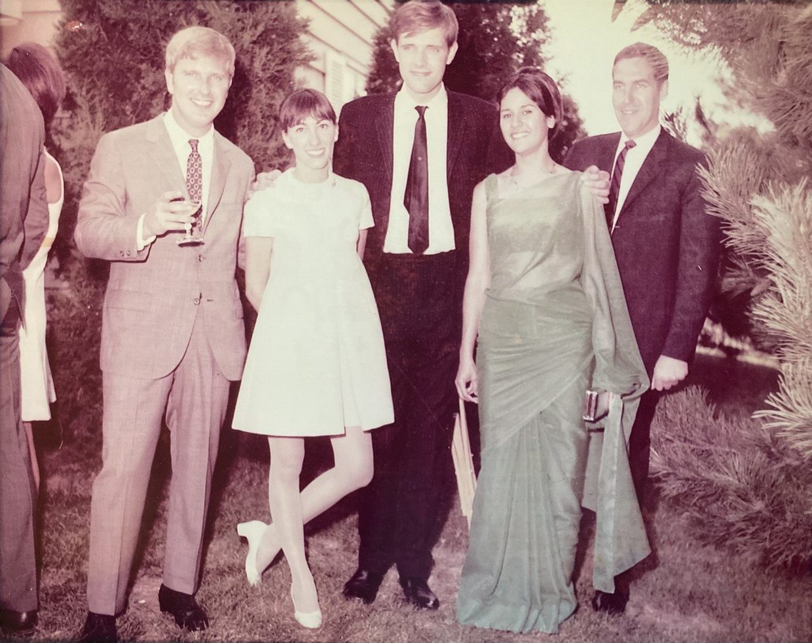
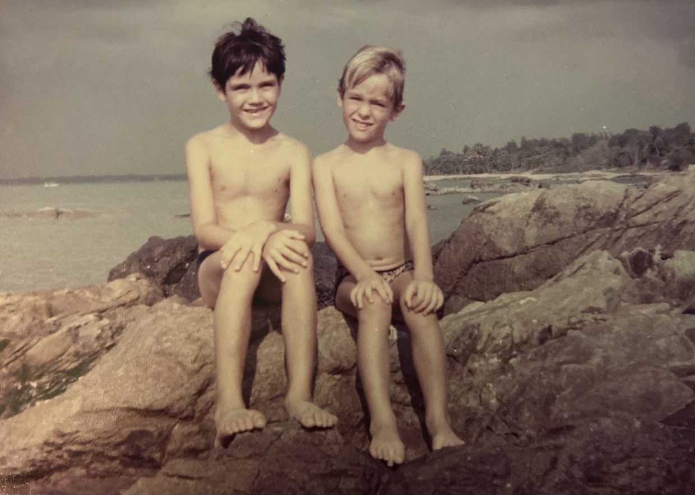
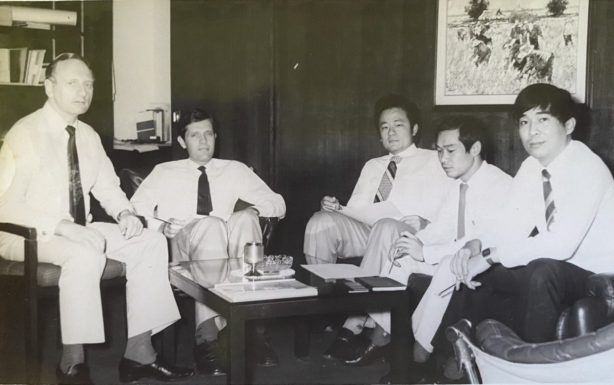

Foreword to Part I
This article draws on cross-cultural experiences from my own life. It is written in 3 parts, of which this is the 1st part.
While the majority of articles I have written to date explore ideas through rational argument, cross-cultural ideas are easier for readers to relate to when shared from experience. Why do I say this? Explaining cross-cultural relationships needs a contextual background. Without knowing something about what happened, when it happened and who it happened to, there is no perspective from which to share the essences of those things that are cross-cultural.
It is not my intention to explain the forms, the etiquettes, the do's and the don'ts. All of this ground is already adequately covered, and a lot of people and organisations are taking this approach. What I am sharing emerges from a living context: the situations, the feelings and the interpretations, as lived and experienced.
While the mainstream seeks the advice of experts in cross-cultural ways and dynamics (a knowledge of the forms, the etiquettes, the do's and the don'ts), I propose a different approach. Why not learn about a culture through your own relationships? Why not develop your own understanding and become your own authority?
To 'succeed' in a cross-cultural environment, I propose that the most important attributes are curiosity and respect. Curiosity means never assuming we know how things work, and to always continue to observe and discover. Respect means understanding that what's important to others in their culture (no matter how odd or unusual it may seem to us), is as real and as important to them as what's important to us in our culture. These are the necessary foundations of learning to live and work in a cross-cultural environment.
I am a German-Anglo-Indian born in Thailand. What does that even mean? My father is German, born and raised in a small town in Schleswig-Holstein, the northernmost state of Germany. While Schleswig-Holstein is a part of Germany, it has many cultural similarities to Denmark, the territory once having been a part of Denmark. My mother is Indian-born of parents that were both Anglo-Indian — of mixed European and Indian descent — going back several generations. My mother worked as a stewardess for Air India in the mid-60s, she was able to build savings and migrate her parents and siblings to Perth, Australia, where they have since settled.
My parents met on an Air India flight from Chicago to London, and while my mother resisted my father's advances at first, she eventually succumbed to his charm – 2 years after that fateful flight, they married in my father's home town of Langenhorn. It was 1969, and it was the first time anyone in my father's village had met someone from the Orient.

A year later my father was posted in Thailand, I was born in 1972, and my brother in 1974. While my father's work required him to accept posts in other countries, my parents always chose to return to Thailand whenever the opportunity presented itself. Both my parents chose Thailand as their home. Today I live in Chiang Mai, my wife is Thai, and we have 2 children. I also chose Thailand as my home. I felt this to be the case from a young age.
#1 Multicultural
What does it mean to be multicultural? The true answer is that I don't fully know. I know how I think and how I feel. I understand some things about my choices and behaviour that are distinct –when compared to Westerners in general–, but I cannot point to the cultural origins of anything with certainty.
If one were to ask about the source of something that is said or believed, there might be a valid reason to say that they are cultural by nature. Whereas a person that is raised in Germany by German parents may be conditioned more specifically by the culture he was raised in, this is less likely to be true for me.
Being raised by parents from different cultures means we have inherited something of each of their cultures, but the degree to which each parent's heritage weighs in varies. The same can be said about the country in which one is raised. Both my brother and I grew up speaking Thai, but many children that grew up in Thailand don't speak Thai; similarly, some Thais that raised their children overseas chose not to speak Thai to them, and raised them entirely within the language and culture of their host country.

The point is that multiculturalism is unique to each individual. This is true of choices that were made for them, and choices that they made for themselves, either consciously or unconsciously; and this also evolves over the course of a lifetime.
#2 Look Krueng
Since this article is written from an autobiographical context, we won't escape a brief discussion on Look Krueng. While Thais frequently identify me as Look Krueng, there is a technicality as it applies to me. Look Krueng literally means half child. While I speak native Thai and was born in Thailand, neither of my parents are Thai; so while my children are both Look Krueng, I am technically not.
What is odd about this is that I never really understood how Thais actually regarded me. While people stated or acknowledged that I was Look Krueng, it always left me wondering if they were being kind and familial by including me as a Thai, or if they really felt that I was Look Krueng; the truth is probably somewhere in the middle, and if I were to conclude on it, I would say that I was being included, just not in the total or absolute sense.
The paradox is that Look Krueng are part Thai, part another culture, and that they are accepted as being Thai, even if they are raised completely outside of Thai culture. One would expect that they are the natural bridge to Thai culture, and while this is often true, it just as often is not.
The reason this is relevant is that being raised part Thai and part third-culture is optimal, cross-culturally speaking, because it creates one of the most natural and organic bridges into Thai culture. A friend of mine was raised with Thai and Belgian parents. She was born in Belgium and grew up there. Her parents operated a popular Thai food restaurant. When she speaks of her parents, she often shares about her Thai mother from a Belgian perspective, and also about her Belgian father from a Thai perspective, switching fluidly between the two. She can explain the origins of conflicts and misunderstandings, elaborating on both the Thai and Belgian points of view, and explaining ways in which these tensions play out or resolve. In her case, her understanding feels innate and matter-of-fact.
#3 Other Cultural Bridges
While growing up in Thailand I was exposed to my father's colleagues, business associates and friends. They were Thai, European, American, South Asian and Middle Eastern. Some of them blended and harmonised with Thai culture, even settling down and eventually retiring in Thailand, while others never integrated, even complaining ceaselessly about 'the locals' after living here for decades.

I also learned that things happened both ways: a foreigner could succeed in business by being culturally exclusive (adhering to the values and practices of his own culture) or choose to integrate, learning to understand and communicate from the Thai perspective, at least to the extent possible. Some blended more naturally, while others clearly had to exert themselves, sometimes appearing awkward in their efforts.
After a lifetime of observation my understanding has progressed somewhat: the foreigners who did best with Thais were the respectful ones — or at least the formal ones. Thais prefer speech and mannerism that is calm and measured. Any communication that is emotionally charged always brings negative results.
Acts of kindness, on the other hand, are more likely to be remembered. Though this has changed somewhat in the past 10 years, the supportive or empathetic foreigners received gratitude — provided they also carried a sense of authority. Authority is ever important, whether it is apparent or real, because Thailand is still a hierarchical society, and while gratitude exists among people of equal stature, it is always amplified when the giver is higher up.